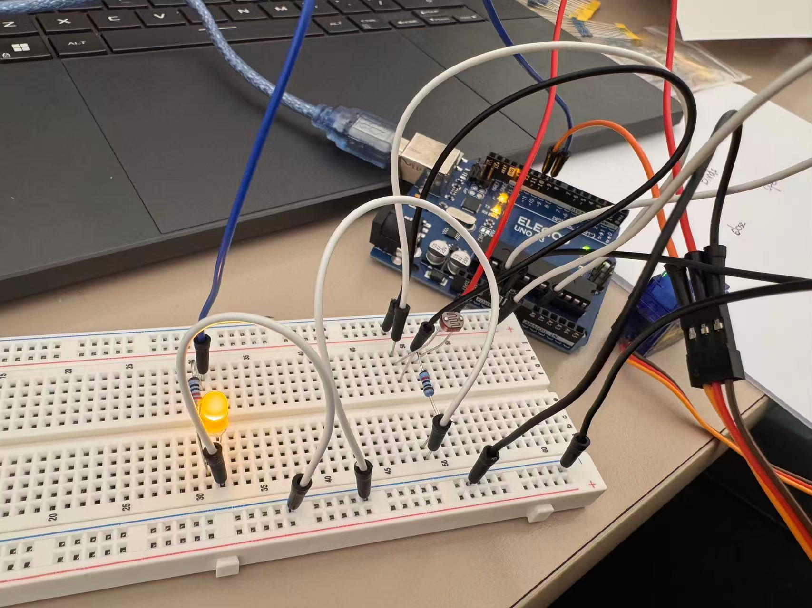
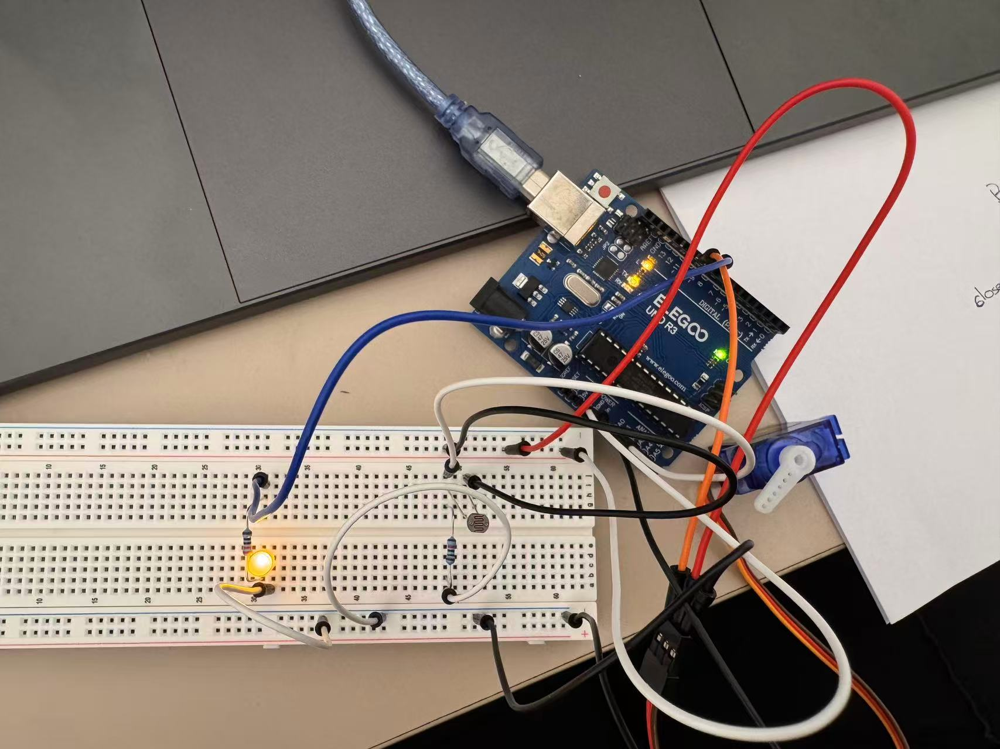
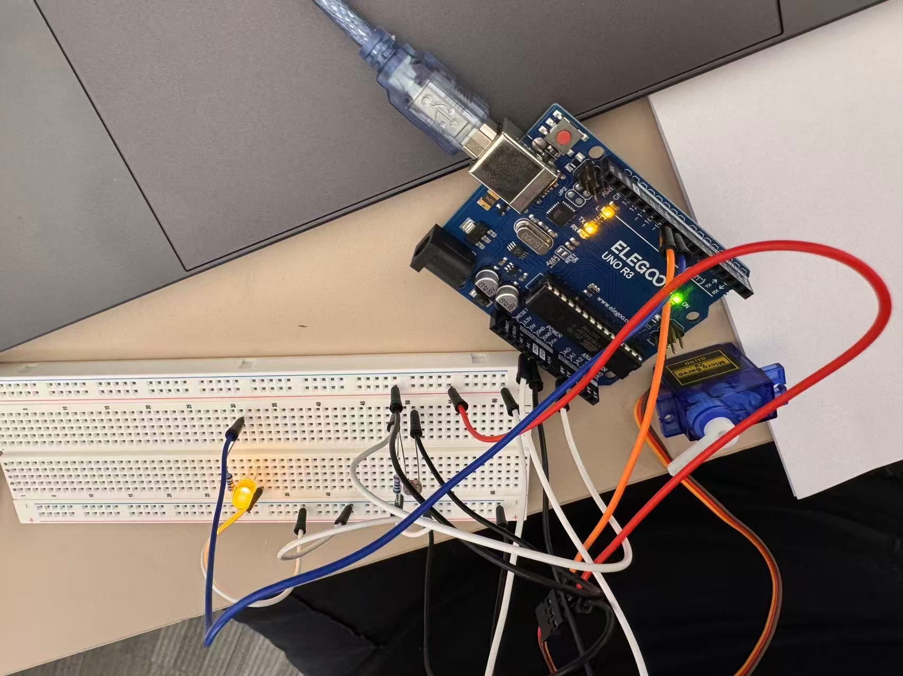
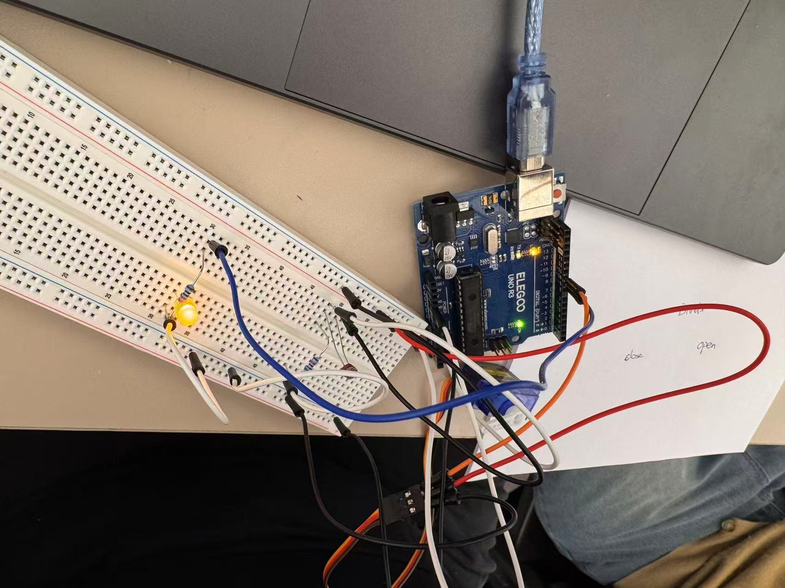

For this assignment, I created a "smart" window blinds system using a photoresistor, a servo motor, and an yellow LED. The photoresistor detects the brightness of the room. When the room becomes brighter, the servo motor rotates to close the blinds and the LED turns on. When the room becomes darker, the servo motor opens the blinds and the LED turns off. And since I don't really have a blind, so the servo motion pretend the blind's motion.

This schematic shows my photoresistor, servo motor, LED, and resistors. The photoresistor (R1) and 10k ohm resistor (R2) create a voltage divider. Arduino pin A0 reads the voltage between them. And servo motor connects to pin ~10. The yellow LED connects to pin ~9 with a 220 ohm resistor (R3). All components share a common ground.
All of the following picture are showing the same circuit since there are so many wires, I just took several different photos with different angles to show the real circuit.





I chose a 10k ohm resistor (R2) for the voltage divider. Assuming the photoresistor ranges from 1k ohm in bright light to 100k ohm in darkness(as the lecture number).
I also used a current-limiting resistor for my yellow LED. Assuming the LED has a forward voltage of 2V and a current of 20mA, the minimum calculated resistance is 150 ohms.
I used a 220 ohm resistor in this assignment and with a current around 13.6mA accross the LED.
// Include the servo library.
#include <Servo.h>
// Set photoresistor to pin A0.
const int sensorPin = A0;
// Set servo motor to pin 10.
const int servoPin = 10;
// Set LED to pin 9.
const int ledPin = 9;
// Create a servo object.
Servo blinds;
// Run setup once when Arduino starts.
void setup() {
// Start serial communication.
Serial.begin(9600);
// Set photoresistor as input.
pinMode(sensorPin, INPUT);
// Set LED as output.
pinMode(ledPin, OUTPUT);
// Connect servo motor to pin 10.
blinds.attach(servoPin);
}
// Repeat the program continuously.
void loop() {
// Read light sensor value from 0 to 1023.
int lightValue = analogRead(sensorPin);
// Convert sensor value to servo angle from 0 to 180.
int angle = map(lightValue, 0, 1023, 0, 180);
// Convert sensor value to LED brightness from 0 to 255.
int brightness = map(lightValue, 0, 1023, 0, 255);
// Move the servo based on light level.
blinds.write(angle);
// Check if the room is bright.
if (lightValue > 600) {
// Turn the LED fully on.
analogWrite(ledPin, 255);
// Print a message for bright light.
Serial.println("Bright room - Blinds closing, light ON!");
// Check if the room is dark.
} else if (lightValue < 300) {
// Turn the LED off.
analogWrite(ledPin, 0);
// Print a message for darkness.
Serial.println("Dark room - Blinds opening, light OFF!");
// Otherwise, the room has medium light.
} else {
// Adjust LED brightness using the mapped value.
analogWrite(ledPin, brightness);
// Print a message for medium brightness.
Serial.println("Medium light - Blinds adjusting, light dimming!");
}
// Print the light sensor label.
Serial.print("Room brightness: ");
// Print the light sensor reading.
Serial.print(lightValue);
// Print the servo angle label.
Serial.print(" | Blind angle: ");
// Print the servo angle.
Serial.println(angle);
// Wait 200ms before reading again.
delay(200);
}
This video shows my smart window blinds system. When more light reaches the photoresistor, the servo rotates toward the closed position and the LED turns on. When I cover the photoresistor, the servo rotates toward the open position and the LED turns off. The example showing might not be perfect since the photoresistor is stilling detecting some lights when cover up with the white paper.

Might need to enlarge the webpage to see the upper photo.
The Serial Monitor prints the photoresistor readings and the servo angles. From my reading that, the sensor reading changed from 313 to 773, while the servo angle changed from 55 to 136 degrees. This shows that the servo responds to changes in room brightness.

The variable resistor can be either R1 or R2. Both arrangements work, but the voltage changes in opposite directions.
Therefore, both positions work. However, switching the photoresistor would reverse the sensor readings. If I kept my code the same, the blinds would close when the room was dark which probably won't make sense in real life.


This graph shows the voltage measured at A0 over time during my circuit demonstration. I converted the analogRead() values to voltage using the following equation:
Voltage = Read value / 1023 * 5V
If the sensor reading of 313 corresponds to approximately 1.53V, while a reading of 773 corresponds to approximately 3.78V. When more light reaches the photoresistor, the voltage increases would make the servo to closed.
Currently, analogRead() uses 10-bit values from 0 to 1023, and analogWrite() uses 8-bit values from 0 to 255.
If analogRead() used a 16-bit ADC, its range would become 0 to 65535. If analogWrite() used 10-bit PWM, its range would become 0 to 1023. (Number Comes from: https://forum.arduino.cc/t/16bit-number-from-analogread/374108/6)
The new map() code would be:
int brightness = map(lightValue, 0, 65535, 0, 1023);
This change allows the Arduino to read more detailed sensor values and control the LED brightness with more steps.
For the servo motor, the mapping would be:
int angle = map(lightValue, 0, 65535, 0, 180);
The servo angle stay the same ranges from 0 to 180 degrees, but the sensor now provides more detailed input values. Which the LED will be increases more "detailedly" if we can actually see it.